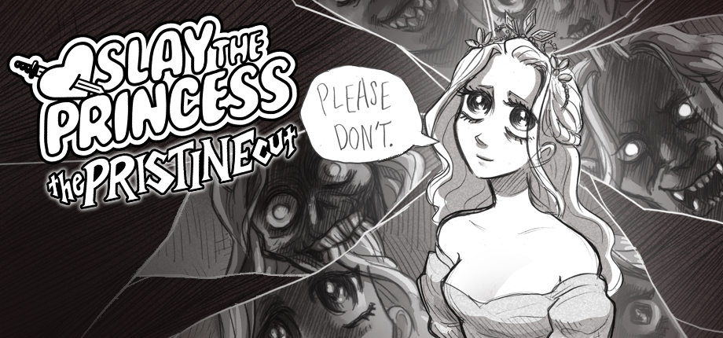

You're on a path in the woods, and at the end of that path is a cabin. And in the basement of that cabin is a Princess.
You're here to slay her. If you don't, it will be the end of the world.
Slay the Princess is a psychological horror visual novel made by Black Tabby Games. The game has a highly branching narrative, taking you through multiple "chapters" until you reach the end of a route and the cycle begins anew. In each new chapter, you gain a new Voice in your head, who will offer suggestions (and bicker with each other) alongside the Narrator.
|
Chapter I: The Hero and the Princess
with the Voice of the Hero |
||||||||||||||||||
|
Chapter II: The Beast with the Voice of the Hunted |
Chapter II: The Witch with the Voice of the Opportunist |
Chapter II: The Prisoner with the Voice of the Skeptic |
Chapter II: The Damsel with the Voice of the Smitten |
Chapter II: The Adversary with the Voice of the Stubborn |
Chapter II: The Tower with the Voice of the Broken |
Chapter II: The Spectre with the Voice of the Cold |
Chapter II: The Nightmare with the Voice of the Paranoid |
Chapter II: The Razor with the Voice of the Cheated |
Chapter II: The Stranger with the Voice of the Contrarian |
|||||||||
| Chapter III: The Den |
Chapter III: The Wild |
Chapter III: The Thorn |
Chapter III: The Cage |
Chapter III: The Grey |
Epilogue: Happily Ever After |
Chapter III: The Eye of the Needle |
Chapter III: The Fury |
Chapter III: The Apotheosis |
Chapter III: The Princess and the Dragon |
Chapter III: The Wraith |
The Moment of Clarity | Chapter III: The Arms Race |
Chapter III: No Way Out |
|||||
| Chapter IV: Mutually Assured Destruction |
Chapter IV: The Empty Cup |
|||||||||||||||||